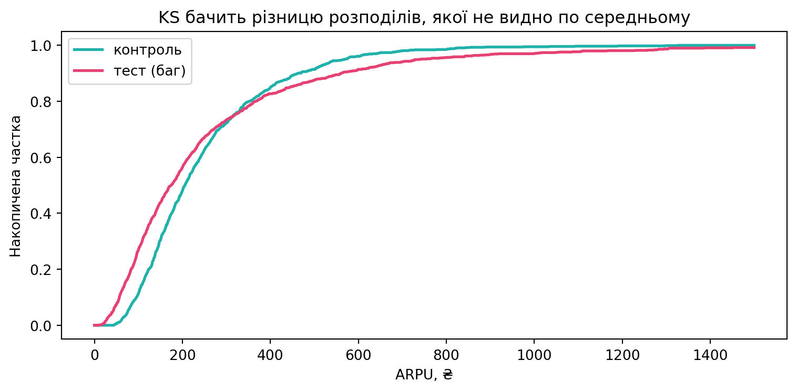
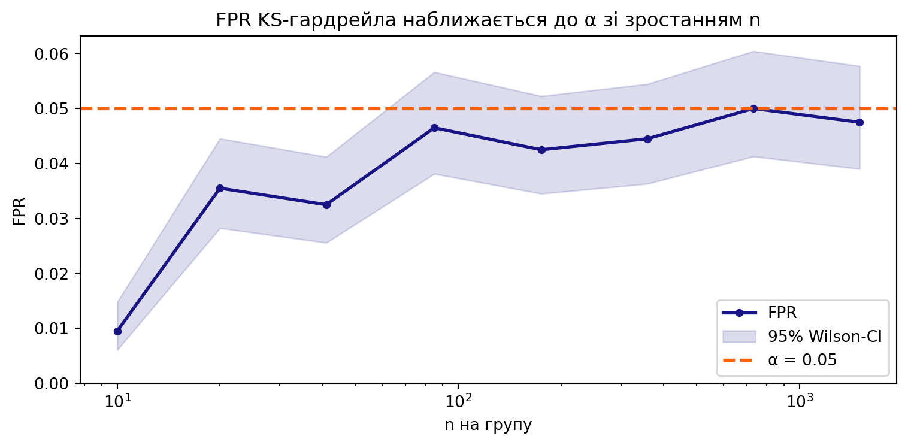

На лекції ми зібрали інструменти, що всі зводяться до однієї ідеї — порівняти функції розподілу (CDF):
Колмогорова (одновибірковий) — чи дані з відомого розподілу \(F_0\);
QQ-plot і Шапіро–Вілка — чи дані нормальні;
Колмогорова–Смирнова (двовибірковий) — чи дві вибірки з одного розподілу.
Сьогодні перетворюємо їх на гардрейли A/B-тестів для застосунку доставки GreenBowl (той самий, що в Практиках 4–5). Відповідаємо на чотири прикладні питання:
Чи нормальна метрика настільки, щоб довіряти \(t\)-тесту на малій вибірці нового міста?
Чи рандомізація чесна — чи дав поділ на групи однакові розподіли (A/A-гардрейл)?
Чи змінив експеримент форму розподілу там, де \(t\)-тест по середньому нічого не побачив?
Чому парний дизайн (до/після на тих самих користувачах) ламає двовибірковий KS?
ПриміткаПравила гри
Ми будуємо маленький інструмент dist_guardrail крок за кроком (нормальність → однорідність → вердикт), а самі критерії беремо готові: scipy.stats.shapiro, scipy.stats.ks_2samp.
Кожна версія — розширення попередньої; фінальні кроки перевикористовують попередні функції.
Після кожної версії — блок «Ваша черга» з мінізадачею і згорнутим розв’язанням.
Де треба перевірити сам критерій, повертаємось до Монте-Карло з Практики 5: генеруємо \(H_0\)/\(H_1\) самі й рахуємо помилки.
1 Кейс: розподіл ARPU у GreenBowl
Команда експериментів GreenBowl запускає багато дрібних A/B-тестів по містах і кухнях. Метрика — ARPU (виторг на користувача), сильно скошена: маса дрібних замовлень + довгий правий хвіст «китів».
Одиниця спостереження: один користувач за тиждень.
Розподіл явно не нормальний. Звідси й починаються наші питання.
2 Частина I — чи нормальна метрика? (Шапіро + QQ)
На малій вибірці \(t\)-тест спирається на нормальність даних (велике \(n\) рятувала б ЦГТ, але в новому місті за тиждень — лише десятки користувачів). Перш ніж довіряти \(t\)-тесту, метрику треба перевірити.
2.1 Версія 1 — вердикт нормальності
def check_normality(sample, alpha=0.05):"""Версія 1. Тест Шапіро–Вілка + людський вердикт.""" W, p = stats.shapiro(sample)if p > alpha: verdict ="✅ не відхиляємо нормальність → t-тесту можна довіряти"else: verdict ="⛔ відхиляємо нормальність → на малому n t-тест ризикований"return {"W": W, "p": p, "verdict": verdict}
QQ-plot показує як саме дані відхиляються (хвости, асиметрія) — те, що один \(p\)-value ховає. Подивимось на малу вибірку ARPU нового міста:
log(ARPU): Shapiro p=0.6758 → ✅ не відхиляємо нормальність → t-тесту можна довіряти
У лог-шкалі точки лягають на пряму, Шапіро не відхиляє — \(t\)-тест на \(\log(\text{ARPU})\) валідний навіть на малій вибірці. Ціна: ми порівнюємо геометричні середні, а не арифметичні (інший зміст ефекту — це треба проговорити з продуктом).
ПорадаВаша черга 1
Згенеруйте вибірку, яка справді нормальна (np.random.normal(250, 30, 40)), і прогоніть check_normality + QQ-plot. Як виглядає «добрий» QQ?
Порівняйте \(p\)-value Шапіро для сирого ARPU при \(n=40\) і \(n=400\). На якій вибірці відхилення «впевненіше» — і чому це не про «дані стали менш нормальними»?
Прикладне. Метрика «час до першого замовлення» теж скошена. Згенеруйте її як np.random.exponential(3, 50) і вирішіть за QQ + Шапіро: аналізувати в сирій чи в лог-шкалі?
ПриміткаРозв’язання 1
# (1) еталонно нормальні даніnp.random.seed(1)good = np.random.normal(250, 30, 40)print("Нормальні дані:", check_normality(good)["verdict"])# (2) той самий розподіл, різне nnp.random.seed(2)print(f"\nСирий ARPU, n=40: p={check_normality(arpu_sample(250,40))['p']:.4f}")print(f"Сирий ARPU, n=400: p={check_normality(arpu_sample(250,400))['p']:.6f}")# (3) час до замовленняnp.random.seed(3)t2o = np.random.exponential(3, 50)print(f"\nЧас до замовлення (сирий): p={check_normality(t2o)['p']:.4f}")print(f"Час до замовлення (log): p={check_normality(np.log(t2o))['p']:.4f}")
Нормальні дані: ✅ не відхиляємо нормальність → t-тесту можна довіряти
Сирий ARPU, n=40: p=0.0000
Сирий ARPU, n=400: p=0.000000
Час до замовлення (сирий): p=0.0000
Час до замовлення (log): p=0.0236
Інтерпретація. Нормальні дані → точки на прямій, великий \(p\). Той самий скошений розподіл при більшому \(n\) дає менший\(p\): тест стає чутливішим — це не «дані змінились», а більше доказів проти нормальності (передвісник пастки великого \(n\)). Скошений «час до події» краще аналізувати в лог-шкалі.
3 Велике \(n\): пастка тестів нормальності
Найважливіше застереження лекції: на великих вибірках тести нормальності відхиляють усе. Реальні дані ніколи не строго нормальні, тож за великого \(n\) навіть мізерне, нешкідливе відхилення стає «значущим».
np.random.seed(10)print("Майже нормальні дані з крихітною домішкою скосу:")for n in (50, 500, 2000, 5000): x = np.random.normal(0, 1, n) x[0] +=0.002* n # мікроскопічний викид p = stats.shapiro(x).pvalueprint(f" n={n:>5d}: p={p:.4f} "f"{'⛔ відхиляє'if p <0.05else'✅ не відхиляє'}")
Майже нормальні дані з крихітною домішкою скосу:
n= 50: p=0.9782 ✅ не відхиляє
n= 500: p=0.7291 ✅ не відхиляє
n= 2000: p=0.8414 ✅ не відхиляє
n= 5000: p=0.0000 ⛔ відхиляє
ПопередженняЩо з цим робити в A/B
На великих вибірках не ганяйтесь за \(p\)-value тесту нормальності: покладайтесь на QQ-plot (форма важливіша за вердикт) + ЦГТ (вона й так робить \(t\)-тест валідним — це ми довели симуляцією в Практиці 5). Тести нормальності — інструмент малих/середніх вибірок.
3.1 Пастка оцінених параметрів → Лілліефорс
Ще одна типова помилка: перевіряти узгодженість Колмогоровим, підставивши параметри, оцінені з тієї ж вибірки. Тоді \(F_0\) «підлаштовується» під дані, і критерій стає надто консервативним. Якщо параметри невідомі — потрібна поправка Лілліефорса.
np.random.seed(11)naive, lilli =0, 0for _ inrange(2000): x = np.random.normal(0, 1, 50)# ❌ НЕправильно: підставляємо вибіркові середнє і std у kstest p_naive = stats.kstest(x, stats.norm(x.mean(), x.std(ddof=1)).cdf).pvalue# ✅ Правильно: поправка Лілліефорса для оцінених параметрів p_lilli = lilliefors(x, dist="norm")[1] naive += p_naive <0.05 lilli += p_lilli <0.05print(f"Частка відхилень H0 (дані НОРМАЛЬНІ, мала б бути ≈5%):")print(f" наївний KS з оціненими параметрами: {naive/2000:.3f} ⛔ майже 0% (надто консервативний)")print(f" Лілліефорс: {lilli/2000:.3f} ✅ ≈ 5%")
Частка відхилень H0 (дані НОРМАЛЬНІ, мала б бути ≈5%):
наївний KS з оціненими параметрами: 0.000 ⛔ майже 0% (надто консервативний)
Лілліефорс: 0.056 ✅ ≈ 5%
ПорадаВаша черга 2
Знайдіть приблизно \(n\), з якого Шапіро починає стабільно відхиляти сирий ARPU (arpu_sample(250, n)). Це і є «небезпечна зона», де тест нормальності реагує на саму скошеність.
Чому в коді вище наївний KS дає ~0% відхилень, хоча дані нормальні? (Підказка: що робить \(F_0\), коли параметри взяті з самих даних?)
Прикладне. Замініть у lilliefors(..., dist="norm") на dist="exp" і перевірте на np.random.exponential(3, 100): чи узгоджуються дані з експоненційним розподілом?
ПриміткаРозв’язання 2
# (1) з якого n Шапіро впевнено бачить скіс ARPUnp.random.seed(20)for n in (20, 40, 80, 160): ps = [stats.shapiro(arpu_sample(250, n)).pvalue for _ inrange(50)]print(f" n={n:>3d}: відхилено у {np.mean(np.array(ps) <0.05):.0%} прогонів")# (3) узгодженість із експоненційнимnp.random.seed(21)exp_data = np.random.exponential(3, 100)print(f"\nLilliefors vs exp: p={lilliefors(exp_data, dist='exp')[1]:.3f} "f"→ {'узгоджується'if lilliefors(exp_data, dist='exp')[1] >0.05else'ні'}")
n= 20: відхилено у 60% прогонів
n= 40: відхилено у 92% прогонів
n= 80: відхилено у 100% прогонів
n=160: відхилено у 100% прогонів
Lilliefors vs exp: p=0.238 → узгоджується
Інтерпретація. Що більший \(n\), то впевненіше Шапіро відхиляє скошений ARPU — бо доказів проти нормальності накопичується більше. Наївний KS дає ~0%, бо підставлені \(\bar x, s\) роблять \(F_0\) майже ідеальним для цих даних: розрив \(D_n\) штучно малий. Лілліефорс це коригує і тримає чесні 5%.
4 Частина II — A/A-гардрейл: чи однакові розподіли груп?
Перед аналізом A/B треба переконатися, що рандомізація чесна: якщо поділ коректний, контроль і тест мають однаковий розподіл усієї метрики, а не лише рівні середні. Це — задача однорідності, і її розв’язує двовибірковий KS.
4.1 Версія 2 — однорідність двох вибірок
def same_distribution(x, y, alpha=0.05):"""Версія 2. Двовибірковий KS: чи x та y з одного розподілу?""" D, p = stats.ks_2samp(x, y)if p > alpha: verdict ="✅ розподіли не відрізняються (рандомізація ок)"else: verdict ="⛔ розподіли різні (підозра на проблему/ефект)"return {"D": D, "p": p, "verdict": verdict}
A/A-сценарій: ділимо користувачів випадково навпіл, жодного впливу. KS не повинен відхилити \(H_0\).
np.random.seed(30)pool = arpu_sample(250, 2000) # один тиждень логівidx = np.random.permutation(2000)A, B = pool[idx[:1000]], pool[idx[1000:]] # чесний випадковий поділr = same_distribution(A, B)print(f"A/A: KS D={r['D']:.4f}, p={r['p']:.4f} → {r['verdict']}")
A/A: KS D=0.0360, p=0.5363 → ✅ розподіли не відрізняються (рандомізація ок)
Зламана рандомізація: уявімо баг, через який «кити» частіше потрапляють у тест (наприклад, він ловить користувачів за останнім великим замовленням). Середні можуть бути близькі, але розподіли — ні.
np.random.seed(31)control = arpu_sample(250, 1000, sigma=0.6)treated = arpu_sample(250, 1000, sigma=0.9) # баг: важчий хвіст у тестіr = same_distribution(control, treated)print(f"Зламаний поділ: KS p={r['p']:.4f} → {r['verdict']}")print(f" А середні майже рівні: {control.mean():.0f} ₴ vs {treated.mean():.0f} ₴")grid = np.linspace(0, 1500, 1000)ecdf =lambda s, g: np.searchsorted(np.sort(s), g, side="right") /len(s)fig, ax = plt.subplots(figsize=(8, 4))ax.plot(grid, ecdf(control, grid), color=turquoise, lw=2, label="контроль")ax.plot(grid, ecdf(treated, grid), color=red_pink, lw=2, label="тест (баг)")ax.set_xlabel("ARPU, ₴"); ax.set_ylabel("Накопичена частка")ax.set_title("KS бачить різницю розподілів, якої не видно по середньому")ax.legend()plt.tight_layout()plt.show()
Зламаний поділ: KS p=0.0000 → ⛔ розподіли різні (підозра на проблему/ефект)
А середні майже рівні: 250 ₴ vs 257 ₴

ВажливоНавіщо це A/B-команді
A/A-гардрейл на KS ловить витоки рандомізації (Sample Ratio Mismatch за формою, перетікання китів, баги спліттера) ще до того, як ви повірите в «ефект». Перевірка по середньому такого не побачить — середні майже рівні, а розподіли різні.
ПорадаВаша черга 3
Зробіть treated ідентичним за параметрами (sigma=0.6), але зсуньте середнє на +30 ₴. KS це ловить? А якби ви дивились лише на середнє — на якому \(n\) помітили б?
KS реагує на будь-яку різницю. Зробіть однакові середнє й розкид, але домішайте в тест 2% нульових замовлень (np.where(np.random.rand(n)<0.02, 0, base)). KS відхиляє?
Прикладне. Загорніть same_distribution у перевірку передперіоду: порівняйте ARPU груп за тиждень до експерименту (там ефекту бути не може). Що означає відхилення на передперіоді?
Зсув +30 ₴: ✅ розподіли не відрізняються (рандомізація ок)
Домішка 2% нулів: ✅ розподіли не відрізняються (рандомізація ок)
Передперіод (має бути ок): ✅ розподіли не відрізняються (рандомізація ок)
Інтерпретація. KS ловить і зсув середнього, і домішку нулів при однакових середньому/розкиді — бо реагує на будь-яку різницю CDF. Відхилення на передперіоді — тривожний сигнал: ефекту там бути не може, тож це баг рандомізації або несхожі групи. Чистий передперіод — необхідна (хоч і не достатня) умова довіри до A/B.
5 KS бачить те, що \(t\)-тест пропускає
Головна теза лекції в дії. Уявімо фічу, яка не змінює середній ARPU, але перерозподіляє його: легкі користувачі починають платити трохи більше, кити — трохи менше. Середнє те саме, форма інша.
\(t\)-тест відповідає лише на питання «чи зсунулось середнє». Якщо ефект у формі (дисперсія, хвости, частка нулів) — його ловить KS, а не \(t\)-тест. Тому в звіті A/B корисно показувати обидва: середнє + розподіл. Зворотний бік — KS чутливий до всього підряд, тож сам по собі не каже, чи різниця бізнес-значуща.
ПорадаВаша черга 4
Поступово зменшуйте різницю форми (sigma тесту 0.9 → 0.7 → 0.61). З якого моменту KS перестає бачити різницю при \(n=4000\)?
Зробіть навпаки: однакова форма, але середнє зсунуте на +5 ₴. Тепер хто чутливіший на \(n=4000\) — \(t\)-тест чи KS? Чому для зсуву середнього \(t\)-тест зазвичай потужніший?
Прикладне. Порахуйте частку нульових замовлень у кожній групі. Чому для «частки нулів» правильніший критерій — \(z\)-тест для пропорцій, а не KS?
Інтерпретація. Що менша різниця форми, то більший \(n\) потрібен KS, щоб її зловити (при sigma=0.61 різниця вже майже невидима). Для зсуву середнього\(t\)-тест зазвичай потужніший: він «заточений» саме під цю відмінність, тоді як KS «розмазує» чутливість по всій формі. Для частки нулів правильний інструмент — \(z\)-тест для пропорцій: метрика бінарна, і нас цікавить один параметр, а не вся CDF.
6 Чи коректний наш KS-гардрейл? (Монте-Карло)
KS-гардрейл — це теж критерій, тож перевіримо його як на Практиці 5: чи тримає він обіцяні 5% хибних спрацювань на наших скошених даних, і з якого \(n\)? Генеруємо A/A (обидві групи з одного розподілу → \(H_0\) вірна) і рахуємо FPR із довірчим інтервалом.
def ks_fpr(gen, n, n_exps=3000, alpha=0.05, seed=73):"""FPR двовибіркового KS під H0 (обидві групи з gen) + 95% Wilson-CI.""" np.random.seed(seed) rej =0for _ inrange(n_exps): rej += stats.ks_2samp(gen(n), gen(n)).pvalue < alpha lo, hi = proportion_confint(rej, n_exps, alpha=0.05, method="wilson")return {"fpr": rej / n_exps, "ci": (lo, hi)}
arpu_aa =lambda n: arpu_sample(250, n)for n in (20, 100, 1000): r = ks_fpr(arpu_aa, n) inside = r["ci"][0] <=0.05<= r["ci"][1]print(f"n={n:>4d}: FPR={r['fpr']:.4f} "f"CI=({r['ci'][0]:.4f}, {r['ci'][1]:.4f}) "f"{'✅'if inside else'🟡 консервативний'}")
На малих вибірках KS консервативний (FPR нижчий за 5%) — через дискретність емпіричних CDF (стрибки по \(1/n\)). Це безпечно (рідше хибна тривога), але коштує потужності. З ростом \(n\) FPR підтягується до \(\alpha\). Практичне правило лекції: \(\ge 1000\) — ідеально, \(50\)–\(1000\) — ок, \(<50\) — обережно.
Код
grid = np.unique(np.geomspace(10, 1500, 8).astype(int))fprs, los, his = [], [], []for n in grid: r = ks_fpr(arpu_aa, int(n), n_exps=2000) fprs.append(r["fpr"]); los.append(r["ci"][0]); his.append(r["ci"][1])fig, ax = plt.subplots(figsize=(8, 4))ax.plot(grid, fprs, color=blue, lw=2, marker="o", ms=4, label="FPR")ax.fill_between(grid, los, his, color=blue, alpha=0.15, label="95% Wilson-CI")ax.axhline(0.05, color=red, ls="--", lw=2, label="α = 0.05")ax.set_xscale("log"); ax.set_ylim(bottom=0)ax.set_xlabel("n на групу"); ax.set_ylabel("FPR")ax.set_title("FPR KS-гардрейла наближається до α зі зростанням n")ax.legend()plt.tight_layout()plt.show()

ПорадаВаша черга 5
Виміряйте потужність гардрейла на «ефекті форми»: контроль arpu_sample(250, n), тест arpu_sample(250, n, sigma=1.0). Скільки користувачів треба, щоб ловити такий ефект із power ≥ 0.8?
На малому \(n\) KS консервативний. Чи означає це, що на \(n=20\) гардрейл некоректний? (Згадайте різницю «консервативний» vs «невалідний» з Практики 5.)
Прикладне. Порівняйте потужність KS і \(t\)-тесту на зсуві середнього +10 ₴ при \(n=500\). Який критерій кращий для цього ефекту — і чому це не робить KS «гіршим узагалі»?
ПриміткаРозв’язання 5
def ks_power(gen_c, gen_t, n, n_exps=2000, alpha=0.05, seed=73): np.random.seed(seed) rej =sum(stats.ks_2samp(gen_t(n), gen_c(n)).pvalue < alphafor _ inrange(n_exps))return rej / n_exps# (1) потужність на ефекті формиctrl =lambda n: arpu_sample(250, n)wide =lambda n: arpu_sample(250, n, sigma=1.0)print("Потужність KS на різниці форми:")for n in (200, 500, 1000): p = ks_power(ctrl, wide, n)print(f" n={n:>4d}: power={p:.3f}{'✅'if p >=0.8else''}")# (3) KS vs t-тест на зсуві середньогоnp.random.seed(50)def t_power(n, n_exps=2000): rej =sum(stats.ttest_ind(arpu_sample(260, n), arpu_sample(250, n), equal_var=False).pvalue <0.05for _ inrange(n_exps))return rej / n_expsshift_c =lambda n: arpu_sample(250, n)shift_t =lambda n: arpu_sample(260, n)print(f"\nЗсув +10 ₴, n=500: KS power={ks_power(shift_c, shift_t, 500):.3f} "f"t-тест power={t_power(500):.3f}")
Інтерпретація. На малому \(n\) KS консервативний, але коректний: він не перевищує \(\alpha\), просто рідше відхиляє (безпечна сторона). Для зсуву середнього\(t\)-тест потужніший — він спеціалізований під цю відмінність. KS не «гірший»: він універсальний (ловить будь-яку зміну форми), а універсальність завжди коштує трохи потужності на конкретну гіпотезу. Вибирайте критерій під тип очікуваного ефекту.
7 Пастка: залежні вибірки (до/після)
KS вимагає незалежні вибірки. Поширений A/B-антипатерн — порівнювати метрику до і після на тих самих користувачах двовибірковим KS. Тоді спільна «індивідуальність» користувача робить вибірки залежними.
Моделюємо це: спільна база (користувач) + свій шум до і після. Якщо ефекту нема, шум однаковий → \(H_0\) вірна.
def ks_fpr_dependent(init_dist, noise_x, noise_y, n, n_exps=2000, alpha=0.05, seed=73):"""FPR KS на парних (до/після) даних зі спільною компонентою.""" rng = np.random.default_rng(seed) rej =0for _ inrange(n_exps): base = init_dist.rvs(n, random_state=rng) # сам користувач x = base + noise_x.rvs(n, random_state=rng) # до y = base + noise_y.rvs(n, random_state=rng) # після rej += stats.ks_2samp(x, y).pvalue < alpha lo, hi = proportion_confint(rej, n_exps, alpha=0.05, method="wilson")return {"fpr": rej / n_exps, "ci": (lo, hi)}# H0 вірна: однаковий шум до/після (ефекту нема)dep = ks_fpr_dependent(stats.norm(0, 4), stats.norm(0, 3), stats.norm(0, 3), n=600)indep = ks_fpr(lambda n: stats.norm(0, 5).rvs(n), n=600)print(f"Залежні (до/після): FPR={dep['fpr']:.4f} "f"CI=({dep['ci'][0]:.4f}, {dep['ci'][1]:.4f}) → сильно нижче 5%")print(f"Незалежні (A/A): FPR={indep['fpr']:.4f} "f"CI=({indep['ci'][0]:.4f}, {indep['ci'][1]:.4f}) → ≈ 5%")
Залежні (до/після): FPR=0.0045 CI=(0.0024, 0.0085) → сильно нижче 5%
Незалежні (A/A): FPR=0.0400 CI=(0.0336, 0.0476) → ≈ 5%
ПопередженняЧому FPR падає — і чим це загрожує
Спільна компонента «склеює» дві емпіричні CDF: вони майже збігаються, тож KS майже ніколи не відхиляє. Критерій стає надмірно консервативним і втрачає потужність — реальний ефект ви проґавите. Для парних даних (до/після, метч-пари) двовибірковий KS не підходить: працюйте з різницями на користувача або беріть парні методи.
ПорадаВаша черга 6
Зробіть «після» з меншим шумом (stats.norm(0, 2)) — це справжній ефект (зменшення розкиду). Порівняйте потужність залежного KS і незалежного A/A на тому ж \(n\). Хто втрачає більше?
Правильний підхід для парних даних — працювати з різницею\(d_i = y_i - x_i\) і перевіряти check_normality(d) + одновибірковий тест. Згенеруйте різниці й покажіть, що так сигнал видно краще.
Прикладне. Назвіть два реальні A/B-сценарії GreenBowl, де вибірки залежні (підказка: один і той самий користувач; та сама зона доставки в різні тижні).
ПриміткаРозв’язання 6
# (1) потужність: залежний KS vs незалежний на справжньому ефектіrng = np.random.default_rng(60)def dep_power(n, n_exps=2000): rej =0for _ inrange(n_exps): base = stats.norm(0, 4).rvs(n, random_state=rng) x = base + stats.norm(0, 3).rvs(n, random_state=rng) y = base + stats.norm(0, 2).rvs(n, random_state=rng) # ефект rej += stats.ks_2samp(x, y).pvalue <0.05return rej / n_expsdef indep_power(n, n_exps=2000): rej =0for _ inrange(n_exps): x = stats.norm(0, 5).rvs(n, random_state=rng) y = stats.norm(0, np.sqrt(4**2+2**2)).rvs(n, random_state=rng) rej += stats.ks_2samp(x, y).pvalue <0.05return rej / n_expsprint(f"n=600: залежний KS power={dep_power(600):.3f} "f"незалежний power={indep_power(600):.3f}")# (2) працюємо з різницеюrng = np.random.default_rng(61)base = stats.norm(0, 4).rvs(600, random_state=rng)x = base + stats.norm(0, 3).rvs(600, random_state=rng)y = base + stats.norm(0, 2).rvs(600, random_state=rng)d = y - xprint(f"Різниці d=y-x: Shapiro p={stats.shapiro(d).pvalue:.3f}, "f"середнє={d.mean():.2f}, std={d.std():.2f}")
Інтерпретація. На парних даних незалежний дизайн набирає потужність набагато швидше: ігноруючи парність, ви викидаєте потужність. Правильно — звести задачу до різниць\(d_i\) на користувача: тоді спільна компонента скорочується, і сигнал (зміна розкиду/середнього) видно прямо. Залежні сценарії GreenBowl: (а) до/після для тих самих користувачів; (б) та сама зона доставки в різні тижні (спільні локальні фактори).
8 Пастки інтерпретації
ПопередженняВеликий \(p\) ≠ «розподіл нормальний»
Невідхилення \(H_0\) — це відсутність доказів проти, а не доказ за. На малому \(n\) тест просто слабкий. Дивіться QQ-plot, а не лише \(p\)-value.
ПопередженняНа великому \(n\) тести нормальності відхиляють усе
Реальні дані ніколи не строго нормальні. За великого \(n\) покладайтесь на QQ + ЦГТ, а не на \(p\)-value Шапіро.
ВажливоНе оцінюйте параметри \(F_0\) з тієї ж вибірки
Підставлені \(\bar x, s\) у kstest роблять критерій надто консервативним. Для нормальності з невідомими параметрами — Лілліефорс (або Шапіро).
Важливо\(t\)-тест бачить лише середнє
Ефект у формі (дисперсія, хвости, частка нулів) \(t\)-тест пропустить — показуйте в звіті A/B і розподіл (KS / ECDF), а не тільки середнє.
ПопередженняKS чутливий до всього — це і плюс, і мінус
Він ловить будь-яку різницю, але не каже, чи вона бізнес-значуща і де саме вона. Поєднуйте з графіком ECDF і доменним глуздом.
ПопередженняДвовибірковий KS — лише для НЕЗАЛЕЖНИХ вибірок
До/після на тих самих користувачах робить його консервативним і слабким. Працюйте з різницями або парними методами.
Чек-лист «розподільної» діагностики A/B
Якщо хоч на одне «ні» — довіряти висновку про розподіл зарано. ```